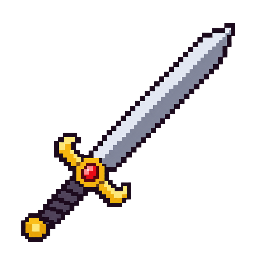
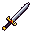
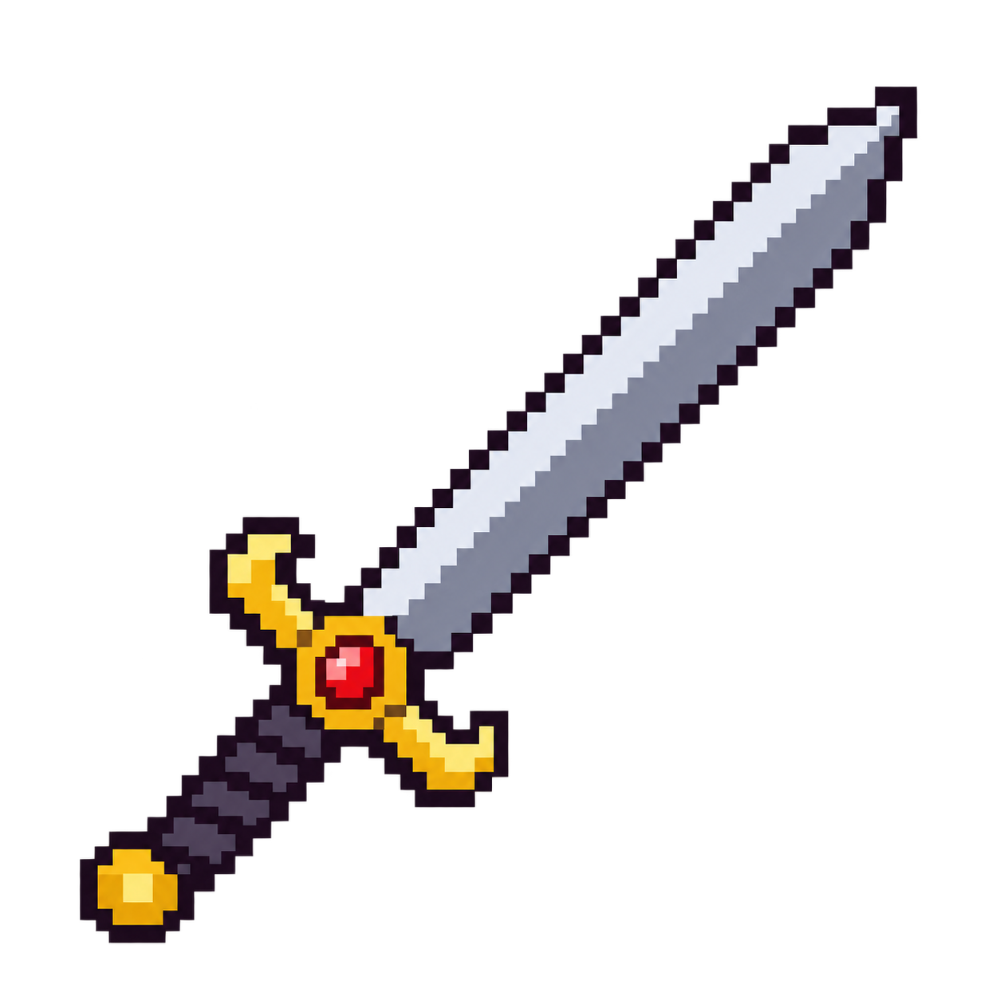
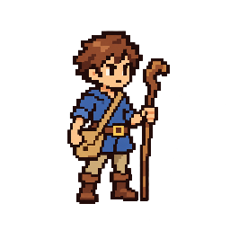
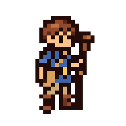
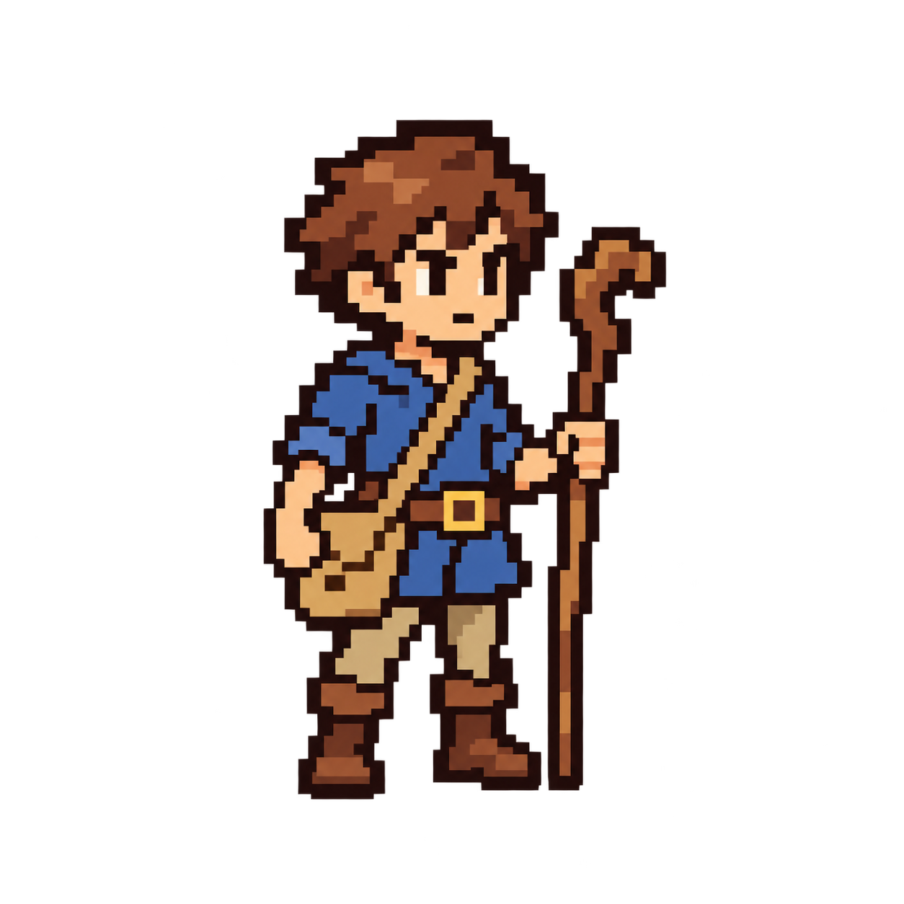

Built-in image tool output, then the same image processed by Pixel Mat. The underlying image model is unknown. This is not a controlled same-GPT benchmark. No new model request or manual pixel patch is used for conversion. Protocol and limits.

Native result at 1×:

Editable project.


Native result at 1×: Editable project.

The sword retains broad material separation; fine gem details simplify. The explorer loses facial and hand detail. Exact dimensions and palette bounds establish an editable native asset, not artistic superiority.